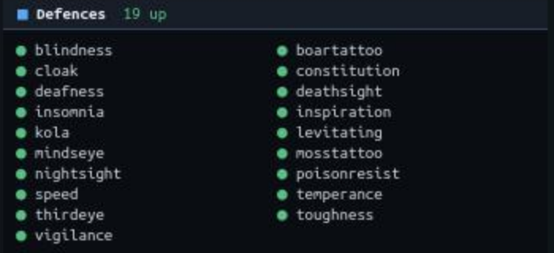

Documentation / Features
Defence maintenance
Choose your defences once from a clickable grid. Emunah raises whatever is missing on the balance it costs, keeps it up when it drops, and never takes a balance that curing needs.

Three modes
emset defs shows every defence Emunah knows as a grid. Click one to cycle its mode:
| Mode | Means |
|---|---|
| off | Left alone. |
| defup | Raised once, then left alone if it later drops. |
| keepup | Raised whenever it is not up. |
Turn keep-up on with emset defs on. The same grid switches pipe relighting and riding keep-up.
Never at curing's expense
Defences go through the same queue as cures, at a lower priority than any cure, so the two can never fight over a balance. While anything curable is on you, keep-up waits: a defence raised mid-lock is usually stripped again at once. The one exception is mindseye while you cannot see, which goes ahead of the other equilibrium defences so you are never left blind.
Every raise declares what it needs as well as what it spends. Perform Bliss spends equilibrium but will not go without balance either; Emunah holds a raise like that until both are there instead of sending it into a refusal.
Never wasted
- Nothing is raised twice. A defence that is already up is never raised again, and a raise waiting for its balance is dropped if the defence comes back on its own.
- The herb has to be in hand. An eaten defence waits until the herb is in your inventory, rather than eating nothing.
- Three tries, then a reason. A defence that never appears after three raises is retired with a message saying so, and naming what the game is reporting instead, which is usually the defence under a different name.
- The game's word is final. "The elixir flows down your throat without effect" means there was nothing to do, so that defence stops at once.
The right order
Blindness and deafness as defences leave you unable to see or hear without mindseye. Emunah does not raise either until mindseye is up, and says so once. Insomnia is held while you are going to sleep, while hypersomnia prevents it, and when mana is too low to afford it.
What it knows
Herb, salve and elixir defences, tattoos, and the general and class skills come with their commands built in. Anything else is one command away:
emset defs add rebounding # a defence Emunah already knows
emset defs add mydefence <command> # and how to raise one it does not
emset defs mode rebounding defup
emset defs remove reboundingWhere a defence's name in the game differs from the thing that grants it, Emunah maps one to the other: venom keeps up poisonresist, blind keeps up blindness. A few defences never appear in the game's defence list at all, such as bliss, and those are tracked from the game's own lines.
After a reload, Emunah reads a DEFENCES listing once to settle anything the defence list cannot say.
The spiritual mace
For a Priest, keep-up holds the mace as well. Which command that takes depends on where the mace is:
| Where it is | Emunah sends |
|---|---|
| In your inventory, not wielded | wield mace |
| Summoned before, now elsewhere | call mace |
| Never summoned this login | summon mace, once, waiting for it to finish |
The shield
At login Emunah checks what you are wielding, and while no shield is wielded a notice stays on the ticker until it is.
Riding
Your mount is kept with you. Whenever it is in the room and you are not riding it, it is ordered to follow you, which costs nothing but needs balance and equilibrium. With riding keep-up on, you vault back onto it whenever you are off it, but only when the balance is idle: never while anything needs curing, never while hunting or PvP is using the balance, and never when the mount is not in the room.
When the mount has been missing for long enough that it is not just walking in behind you, the end of your prompt says so.
emset riding # here or not, ridden or following, keep-up on or off
emset riding on|off # vault back on automatically
emset riding.mount horse123 # your mount, as VAULT takes itThe rest of your upkeep
Pipes are kept filled and lit, and selfishness is kept up against thieves. Both are part of Upkeep and economy.